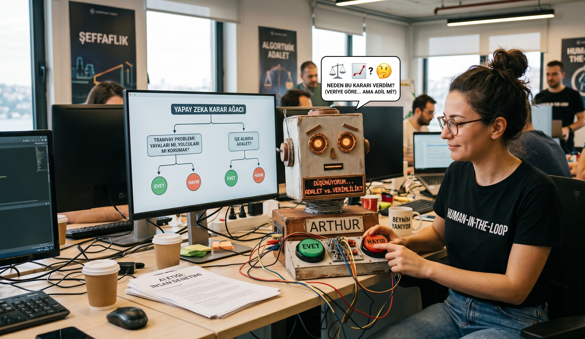
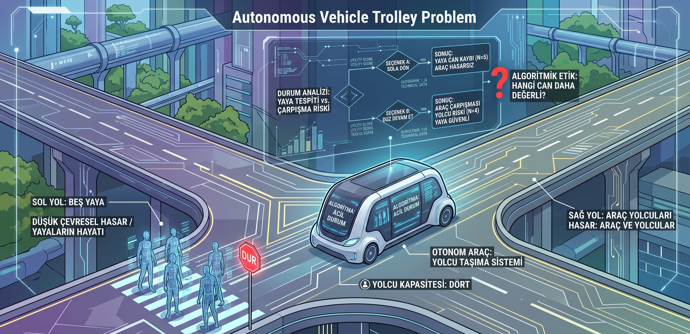

Yapay Zeka Etiği ve
Karar Mekanizmaları
10. Hafta: Algoritmalar Adil mi?
Makineler Düşünürken…
Yapay Zeka Etiği; akıllı sistemlerin tasarımı, yaygınlaştırılması ve kullanımı sırasında ortaya çıkan ahlaki sorunları inceleyen disiplindir.
Algoritmik Adalet (Fairness)
AI kararları toplumun tamamı için eşit mi?
Şeffaflık ve Açıklanabilirlik
AI neden bu kararı verdi, anlayabiliyor muyuz?
İnsan Denetimi
Human-in-the-loop: Kritik kararlarda insan onayı

images/ai_thinking.png
Yapay Zeka Dönüm Noktaları
Turing Testi
"Makineler düşünebilir mi?"
Deep Blue
IBM satranç şampiyonunu yendi
AlphaGo
Go oyununda insanı geçti
ChatGPT
Jeneratif AI herkesin elinde — 100M kullanıcı (2 ay)
AI Act (AB)
İlk kapsamlı AI düzenleme yasası
her şeyi değiştiren tweet
today we launched ChatGPT. try talking with it here: https://t.co/uWra8LKFMN
— Sam Altman (@sama) November 30, 2022
2 ay içinde 100 milyon kullanıcıya ulaştı — tarihin en hızlı büyüyen uygulaması.
Algoritmik Önyargı
Kirli Veri
Eğitim verisi geçmişteki ayrımcılıkları içeriyorsa, AI hataları öğrenir ve pekiştirir.
Garbage In → Garbage Out
Temsiliyet Sorunu
Yüz tanıma sistemleri azınlık gruplarda %35'e varan hata verebilir.
MIT: "Gender Shades" araştırması (2018)
Geri Besleme Döngüsü
AI kararları gerçeği değiştirir, değişen gerçek AI'yı daha da önyargılı yapar.
Prediktif polislik: Suç var diye daha çok devriye → daha çok suç kaydı
"Yapay zeka tarafsız değildir; yaratıcısının ve verisinin dijital bir yansımasıdır."
Vaka: Amazon İşe Alım AI
Amazon, 2014'te bir AI işe alım sistemi geliştirdi. Sistem, son 10 yılda işe alınan (çoğunluğu erkek) başvurulardan öğrenerek kadın adayları sistematik olarak eledi.
❌ Ne oldu?
"Kadın" kelimesini içeren CV'lere puan düşürdü. "Kadın satranç kulübü" bile olumsuz sinyal oldu.
⚠ Neden?
Eğitim verisi 10 yıllık erkek-ağırlıklı başvurulardan oluşuyordu. AI geçmişin bias'ını öğrendi.
✓ Sonuç
2018'de proje iptal edildi. "AI önyargıyı yok etmez, pekiştirir" dersi alındı.
Kaynak: MIT Media Lab — "Gender Shades" (Joy Buolamwini, 2018)
Kara Kutu: "Neden?" Sorusu
Açıklanabilirlik Eksikliği
Derin öğrenme modelleri milyarlarca parametre ile karar verir. Kararın arkasındaki mantığı açıklamak bazen imkansızdır.
> input: {cv: ★★★★, age: 28, exp: 5yr}
> layer_1: [0.82, 0.15, 0.93, ..., 0.44] // 768 neurons
> layer_2: [0.33, 0.71, ..., 0.28] // 1024 neurons
> ...48 hidden layers...
> layer_50: [0.91, 0.02]
> output: REJECT (confidence: 94.7%)
> explain(): ERROR — EXPLAINABILITY: NULL
"Neden reddedildi?" → "94.7% emin ama neden olduğunu bilmiyoruz."
Açıklama Hakkı
GDPR Md. 22: Bireylerin, otomatize kararların mantığına dair açıklama alma hakkı vardır.
✦ XAI (Explainable AI) — Model kararlarını anlaşılır kılan araştırma alanı.
Otonom Araçlar: Trolley Problemi
Bir otonom araç kaçınılmaz bir kazayla karşı karşıya. Sola kırsa yayaya, düz gitse yolcuya zarar verecek. Arabanın algoritması nasıl karar vermeli?
🔵 Faydacı Yaklaşım
En az zararı verecek seçenek: kayıp sayısını minimize et.
🟣 Deontolojik Yaklaşım
İnsan hayatına son vermek her durumda yanlış: "öldürmemelisin."
🔴 Gerçek Soru
Bu kararı kim programlayacak? Yaşa, sayıya göre mi? Hukuki sorumluluk kimde?

images/trolley_ai.png
AI Hata Yaparsa Kim Sorumlu?
Geliştirici
"Kodu ben yazdım ama sistemi veri eğitti."
Test & doğrulama sorumluluğu
Şirket
"Biz sadece aracı kullandık, hata algoritmik."
Dağıtım ve kullanım sorumluluğu
Algoritma
"Ben sadece istatistiksel bir çıkarım yaptım."
Tüzel kişilik yok — sorumluluk boşluğu
Accountability Gap: Kimsenin suçlu olmadığı bir suç mümkün mü? AB AI Act, "yüksek riskli" AI sistemleri için zorunlu insan denetimi getiriyor.
images/ai_hiring.png
Senaryo: İşe Alım Botu
AI sisteminiz binlerce başvuruyu filtreler. "Kariyerinde 1+ yıl boşluk bırakan" adayları otomatik eliyor. Ancak bu, çocuk sahibi kadınları orantısız etkiliyor.
Yönetim: "Sistem verimliliği %40 artırdı. Devam."
Durdur & Düzelt
"Verimlilik, ayrımcılığın bahanesi olamaz."
Devam Et
"Boşluk riski gerçek. İstisnalar için manuel kontrol eklerim."
AB AI Act: İşe alım AI'ı "yüksek riskli" kategorisinde — bias testleri zorunlu!
Haftaya Bakış
Sıradaki Konu: Bilişim Suçları ve Siber Zorbalık
BU HAFTA NE ÖĞRENDİK?
AI Etiği
Adalet & Şeffaflık
Önyargı
Bias & Ayrımcılık
Kara Kutu
Açıklanabilirlik
Sorumluluk
AI Act & Denetim
"AI ne iyi ne kötüdür — onu tasarlayanların ve kullananların değerlerinin yansımasıdır."